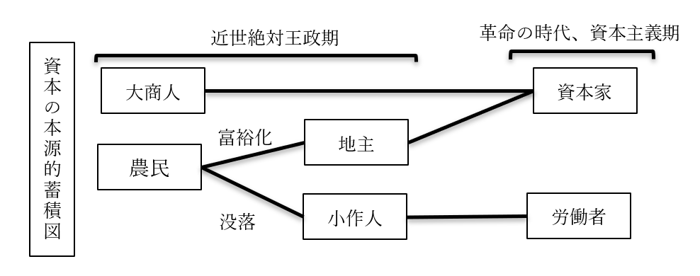
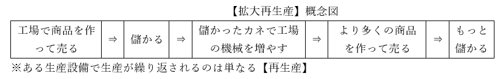
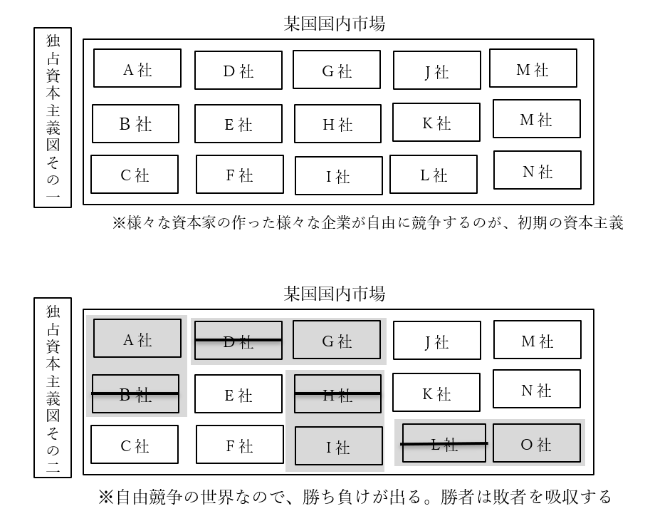
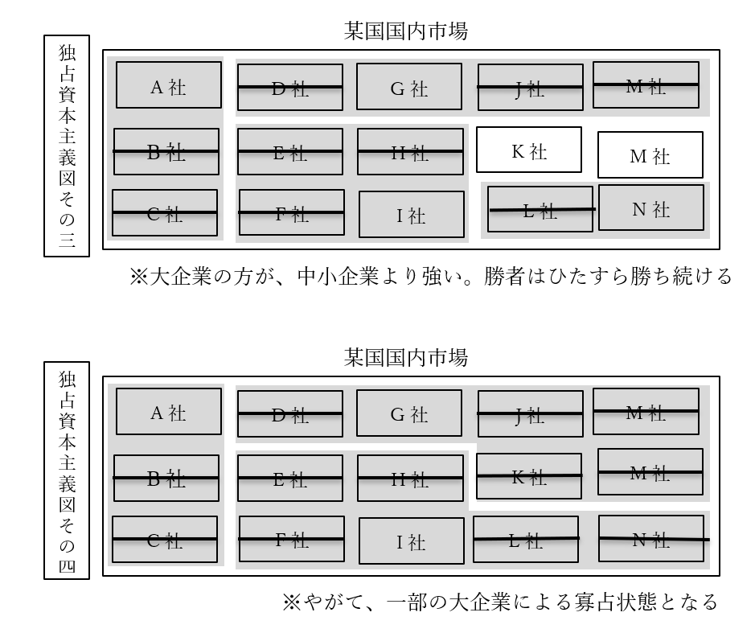
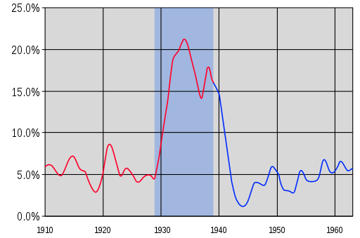

資本主義
●資本主義とは
○資本主義の基本
| 誕生した時期 | 【産業革命】の前後 革命の時代前後 |
| 資本主義の定義 | 【私有財産制】を認める経済 ※【生産手段】の【私有】という意味 |
・本節ではまず、誕生した直後の資本主義を例にして、資本主義とは何かを見ていこう
・資本主義は、【産業革命】と市民革命のあった、革命の時代前後に発生した
⇒【産業革命】を端的に説明すれば、「機械で商品を大量生産できるようになった」というものである。産業革命以前は、どんな先進国であっても結局、商品は手作りだった。しかし産業革命によって機械で商品を大量生産できるようになった。「多くの人はどこかの会社の社員で、毎朝職場に行って働いて、会社から給料を貰って生活する」という現代的な資本主義社会は、その結果として形成されたという側面がある
・ところで、「資本主義経済とはどんなものか」ではなく、定義は何か？
・一般的には以下の通りである、とされる
定義：【生産手段】の【私有】を認めるという意味での【私有財産制】を認める経済
・生産手段とは、商品を生産する為の手段である。工場、機械、土地等を指す
※一般的には、「私有財産制」と言ったら「財産の私有（財産を個人が所有する）を認める」もの。但し資本主義の定義で出てくる場合は、「生産手段の私有を認める」という意味で使われる
・産業革命以降、金儲けをするなら「工場の機械を動かして商品を大量生産し、売る」が基本
・この工場とか機械を持っているのが、金持ち。いわゆる【資本家（ブルジョワジー）】
・金持ちでない一般人は、こういう生産手段を持っていない。いわゆる【労働者（プロレタリアート）】
・生産手段（工場とか機械）は、持ってるだけじゃ意味がない
・動かして、商品を生産しなければ意味がない
・資本家一人で工場の機械全部動かす訳にもいかない
・そこで、労働者に工場で働いて貰う。代わりに資本家は、労働者に金を払う
⇒つまり、資本家は［生産手段］を提供し、労働者は［労働力］を提供するという関係になる
| 【資本家（ブルジョワジー）】 | 【労働者（プロレタリアート）】 | |
|---|---|---|
| 生産手段 | ［持っている］ | ［持っていない］ |
| 労使関係 | 労働者に［生産手段］を提供する 労働者に給料を払う |
資本家に［労働力］を提供する 労働力を提供する |
| 本音 | 労働者に金払いたくない 労働者を長時間働かせたい |
資本家は俺達にもっと金を払え 資本家は俺達をもっと休ませろ |
○資本主義の誕生
・革命の時代前後、資本主義経済は【産業革命】と共に誕生した
・誕生したばかりの頃の資本主義は、［産業資本主義］などと呼ばれる
| 時期 | 工業と経済 |
|---|---|
| 絶対主義の時代まで | ［手工業］しかなかった 例：［工場制手工業（マニュファクチュア）］ |
| 革命の時代前後 | 【産業革命】が発生 ↓ 工業が［工場制機械工業］へ進化 ↓ ［産業資本主義］的な資本主義経済の発生 |
・産業革命以前は、現代的な意味での機械がなかった、故に工業は、全て［手工業］だった
⇒代表が［工場制手工業（マニュファクチュア）］。工場に人を集めて手作りする。逆に言えば、産業革命以前は「工場があったとしても、工場の中で手作りしてる」「機械を使って商品を大量生産、はできない」という状況であった。どんな先進国でも、そうだった
・革命の時代に産業革命が発生し、機械で大量生産できるようになった
⇒工場制手工業も、［工場制機械工業］へ進化した。「工場の中に機械があって、社員が機会を操作して商品を大量生産する」に変わったのである。産業革命を経た国と産業革命前の国では、絶大な差がついた
・ここから、産業資本家が登場した。工場に労働者と機械を集めて大量生産し、儲ける者達である
・この産業資本家が中心となって経済を回すのが、［産業資本主義］である
○資本の本源的蓄積
・ところで、いつの世にも金持ちはいるから、資本家の存在は分かるだろう
・問題は労働者である。彼らは、何処から来たのか？
・と言うのは、一般に中世とか近世の庶民というと、農民を思い起こす筈である
・そして農民というのは普通、自分の土地を耕して農業をしている
⇒つまり農民は普通、「自分の土地」という生産手段を持っている
・一方、労働者は生産手段を持たない人々である。彼らは何処から来たのか？（二回目）
・実は彼らは、没落した農民が主である…と言われている
・近世の欧州は、農民の間で格差の拡大が進行した時代でもある
・その格差拡大の中で、没落した（貧乏になった）農民は自分の土地を失い、小作人となっていった
⇒自分の土地を持たず、他人の土地を借りて耕している農民を小作人と呼ぶ
・こういう没落農民達が、工場に集まって労働者になっていった、と言われている
・逆に、没落しなかった農民は地主等の富裕層となり、やがて産業資本家となっていった
⇒言ってみれば、近世に農民内で貧富の格差が拡大した事によって、資本主義経済に必須の「資本家」と「労働者」が揃った、とも言える。こういう、資本主義の前提が揃う動きの事を［資本の本源的蓄積］と呼ぶ事がある
※ただこれは、正直に言うと古い説です。最近は「これ貧富の格差が拡大してどうこうじゃなくて、農業技術が進んで農作物が沢山取れるようになって人口が増えて、その増えた人達が労働者になっただけじゃない？」みたいな説が出てきています。産業革命発祥の地イギリスなんかでは、これが有力です

○利潤追求
・資本主義経済はまた、（特に資本家による）【利潤の追求】を認める体制である
・ある生産設備で生産が繰り返される事を【再生産】と言う
・ところで、商品が売れれば売れるほど、資本家は儲かる
・資本家は普通、利潤を追求する（利益を増やそうとする）ので、商品を大量に生産しようとする
・つまり、資本主義経済では【拡大再生産】が基本となる
⇒工場で商品を生産する。それで儲かる。儲かったら、更に儲ける為に工場や機械を増やす。また工場で商品を生産する。また儲かる。儲かったら…と繰り返す

・では、民間の資本家が拡大再生産している間、政府は何をするか
・この時期の政府の経済政策は【自由放任（レッセ・フェール）】が基本となる
⇒この時期は、「俺達にもっと自由に金儲けさせろ」という自由権が重視された時代。故にこの時期の政府の理想は【夜警国家】。国防とか治安維持みたいな最低限の事しかしない、小さな政府。政府が何もせず、市場の資本家が自由に競争すれば、【「神の見えざる手に導かれて」】経済は発展する（【『国富論』】の【アダム・スミス】）という考え方が、この時代の経済観
産業資本主義の時代の経済の基本的な考え方
| 理想の政府 | 【夜警国家】 【小さな政府】 |
| ↓の基礎理論提供者 | 【『国富論』】の【アダム・スミス】 |
| 理想の経済 | 【自由放任（レッセ・フェール）】 政府が何もせず、市場の資本家が自由に競争すれば、【「神の見えざる手に導かれて」】経済は発展する |
| って事はつまり | 資本主義経済は［無計画］経済 経済の［無政府］性あり 【景気変動（景気循環）】は不可避 【失業者】の発生も不可避 |
・つまるところ、資本主義経済に於いては、経済は［無計画］経済である
・言い方を変えれば、資本主義経済は［無政府］性を持つ
・無計画である以上、需要と供給が一致しない事態は起こり得る
・当然、過剰供給による売れ残りや、それによる企業の業績悪化、倒産等も起こり得る
・ひいては、「好景気⇒不況⇒回復期⇒好景気…」みたいな【景気変動（景気循環）】も避けられない
・また、不況が避けられない以上、【失業者】の発生も避けられない
●資本主義の修正
・資本主義の誕生は既に見たので、その後資本主義がどう変わっていったかを見ていく
○独占資本主義の台頭
・次の諸図で説明するような事態が進行していった、とされる


・資本主義経済に於ける競争というのは、カネを多く持っている方が強い
・また産業資本主義は、利潤追求を肯定し、政府は介入せず自由競争に任せる
・この二つの合わせ技が問題だった
・カネを多く持っている方が強いので、勝者となった大企業はそのまま勝ち続ける
・しかも自由放任で政府が介入しないので、弱い企業の救済策や逆転要素も特にない
・結果、勝ち続けた少数の企業が、経済を支配するようになってしまうのである
| ［資本の集積］ | ある一社が利潤を追求した結果巨大化するもの |
| ［資本の集中］ | 少数の巨大企業が結託するもの ［カルテル］［トラスト］［コンツェルン］等と呼ばれるものはこちら |
| ［独占資本主義］ | 少数の巨大企業に支配される形の資本主義経済 |
| ［独占資本］ | 経済を支配する少数の巨大企業 |
※［カルテル］［トラスト］［コンツェルン］の三種は『市場の失敗』という節で詳しくやります
～半分雑談：独占資本と帝国主義～
・帝国の時代は、【植民地】獲得競争が盛んに行われた時期でもある
⇒植民地を獲得するべく他国を征服したり、戦争したりするのを【帝国主義】という
・この時期の植民地獲得競争は、既に見たように、イギリスに対する各国の追い上げでも説明できる
・同様に、農業技術の未熟による植民先の獲得競争でも説明できる
・一方、帝国の時代の植民地獲得競争は、［独占資本］によって主導された面もある
⇒この頃になると、独占資本が更なる拡大再生産を行っても、もう国内には商品が行き渡り切っていて売上が増えない、という状況になっていた。そこで、他国の領地を切り取って植民地とし、増産した商品を植民地の住人に売りつけて儲けようとしたのである
～雑談終わり～
○修正資本主義の登場
・産業資本主義の誕生以来、自由主義と資本主義は繁栄を謳歌していた
・独占資本主義という批判はあったし、参政権獲得運動もあったが…
・「自由権を制限しよう」「自由放任はやめよう」という風潮は小さく、弱かった
・この「自由権を制限しよう」「自由放任はやめよう」という風潮は、世界大戦と共に強くなり始めた
・そして世界大戦期のど真ん中、1929年末を契機に、一気に時代の流れとなる
・即ち、1929年末に起きた【世界恐慌】が、世の中を大きく変えたのである
・世界恐慌は、その名の通り、世界中が超のつく大不況になった事件である
・この事件によってついに、自由放任政策の廃止が時代の潮流となる
⇒「景気変動は避けられないものだから不況ってのは必ず来るし、仕方ない」「放っておけば景気は勝手に回復する」等とは言っていられないほどの大不況になった
～世界恐慌ってどれぐらい凄い不況だったんですか～
１：1930年代全体を通して、アメリカ合衆国の失業率はほぼ15%超え。ヤバい時は20%超え
２：ドイツ国の被害は特に大きく、一時は失業率40%超えに
３：大日本帝国も、学士（いわゆる大卒）の就職率が一時30%台になる大不況に
※この時代の大学生は、専門学校と合わせても16万人ぐらいしかいない。ちなみに、令和三年現在の東京大学、京都大学、慶應大学、早稲田大学、上智大学の在籍者数を全部合わせた数字が16万人行かないぐらい。令和三年現在の大学生総数は291万人である
～「放っておけば景気は勝手に回復する」とは言ってられないですねこれは～
| 産業資本主義以来の考え方 | 世界大戦期以降、特に世界恐慌以降出てきた考え方 | |
|---|---|---|
| 重視された人権 | 【自由権】 | 【社会権】 |
| 理想の政府 | 【夜警国家】 【小さな政府】 |
【福祉国家】 【大きな政府】 |
| ↓の基礎理論提供者 | 【『国富論』】の【アダム・スミス】 | ［『雇用、利子及び貨幣に関する一般理論』］のジョン・メイナード・【ケインズ】 |
| 理想の経済 | 【自由放任（レッセ・フェール）】 政府が何もせず、市場の資本家が自由に競争すれば、【「神の見えざる手に導かれて」】経済は発展する |
【ケインズ主義】 政府が市場に介入して、経済を活性化させる（例えば不況の時、好景気になるような経済政策を実施する） |
| って事はつまり | 資本主義経済は［無計画］経済 経済の［無政府］性あり 【景気変動（景気循環）】は不可避 【失業者】の発生も不可避 |
いわゆる【修正資本主義】 【経済計画】を実施する 景気変動を小さくしようとする 失業者をゼロにしようとする |
・本来自由放任を旨とした資本主義は、この挫折を機に【修正資本主義】となっていく
・【福祉国家】的な【大きな政府】路線が、世界の潮流となる
※またこの辺りから、【自由権】を制限して【社会権】を重視しよう、という流れも強くなっていく
※勿論、世界恐慌以外にも、この潮流を生んだ原因はある。第一次世界大戦で、金持ちも貧乏人も平等に軍人として働いた、という経験もある。また、第一次世界大戦中に起きた【ロシア革命】が【ソ連】を生み出した、というのもある。「労働者を虐め過ぎると革命が起きる」という感覚が、金持ち・大企業の自由を制限して社会権を重視し、貧乏な一般庶民を助けよう、という意識を生んだ側面がある
・修正資本主義下の大きな政府に於いては、政府が市場に介入し、経済を“改良”しようとする
・このように、計画を立てて経済に介入する事を【経済計画】という
・【経済計画】の代表例としては、財政政策や金融政策、市場の失敗への対処等がある
・これらについて詳しくは後々やるので、今回は代表例として一つ、公共事業を挙げておこう
～経済計画の代表例、不況の時に公共事業を増やす～
国が金を出して高速道路を作る、ダムを作る、競技場を作る等々を公共事業と呼ぶ。修正資本主義的な政策を採用している国家では、不況時に増える。
簡単に言えば不況とは、企業が儲かっていない（企業の商品が売れていない）状態。そして好景気とは、企業が儲かっている（企業の商品がよく売れている）状態である。
そして不況の時は、労働者の仕事がなくなる（クビになったり勤めてた会社が潰れたりする）。仕事がなければ、労働者の給料はゼロになる。給料がゼロだと、普通の人はカネを使えない。人々がカネを使えないという事はつまり、企業の商品が売れないという事である。
だから、不況の時は政府が「ダム作るぞ」「高速道路作るぞ」というので労働者を雇い、カネを払ってやれ（政府が労働者の仕事を作ってやれ）…というので、公共事業を増やす訳である。人々は公共事業の為に働いて得たカネで企業の商品を買い、企業は儲かるようになり、景気は回復に向かう…という話なのだ。
～勿論これだけが経済計画じゃないし、不況時にやるべき事でもない。詳しくはまた今度～
・こういった修正資本主義の基礎理論を提供したのは、ジョン・メイナード・【ケインズ】だとされる
・また、政府が市場に介入して経済を活性化させよう、と考える事を【ケインズ主義】と呼ぶ事が多い
・ケインズ主義の実例としてよく挙げられる政策が、アメリカ合衆国の【ニューディール政策】である
※実施したのは大統領【フランクリン・Ｄ・ルーズベルト】。米国が第二次世界大戦へ参戦した時の大統領でもあり、ソ連が大好きな大統領でもあり、第二次大戦末期に死んだ後米ソ関係が急速に悪化した、あの大統領である
・この政策では、政府が金を出して［テネシー河］にダムを作る等の公共事業を実施した
・世界恐慌で大量に出た失業者が、この公共事業関連会社に就職した
※実際には、ニューディール政策は世界経済のみならず米国経済を復活させるにも不充分だった。大きな政府路線による、政府が市場に介入して不況から回復させる政策には、カネを大量に、ドバドバと注ぎ込む必要がある。ここで尻込みして投入するカネを惜しむと、「効果はあるにはあったけど結局不況のままですよね」になる。これはニューディール政策でも、現代日本の第二次安倍政権によるアベノミクス政策でも変わらない。実際、ニューディール政策は不充分だった為、米国経済が本格的に復活したのは世界大戦が始まってからである。「戦争だから」という大義名分を得てカネを市場にドバドバ突っ込んだ結果、米国経済は完全に復活した

アメリカ合衆国の失業率を示したもの。1930年代の中盤に一度下がって上がっているところが、分かりやすく「効果はあるにはあったけど結局不況のままですよね」になったニューディール政策を表している。一方、第二次世界大戦の開幕（1939年）を境に、失業率は急速に下がっている。
https://upload.wikimedia.org/wikipedia/commons/0/04/Real_GDP_of_the_United_States_from_1910-1960.svg
Pharexia, CC BY-SA 4.0 https://creativecommons.org/licenses/by-sa/4.0, via Wikimedia Commons
・尚、ニューディール政策はダム建設ばかりが注目されるが、実際には他にもやっている
・それこそ金融政策は大変重要なのだが、こちらが重視して解説される事は少ない
⇒大学受験の問題でも、ニューディール政策の公共事業（ダム建設）については語られるが、金融政策についてはほぼ問われない
・一方で、ニューディール政策の中で［社会保障］関係の法律を制定したのは重視される事が多い
・何せ米国は伝統的に自由権重視で、今でも社会保障が死ぬほど貧弱である
・そんな伝統を持つ米国の歴史の中で、社会保障関係の法律が制定されたのは異例と言える
⇒それほどまでに、世界恐慌後の混乱は凄かった、という話だと言える。代表例としては年金保険や公的扶助（生活保護のようなもの）制度を定めた［社会保障法］や、労働者保護法の［ワグナー法］がある
・ちなみに、［グリーン・ニューディール政策］というのもある
・これは、2008年のリーマンショックに端を発した世界的な不況に際して行われたものである
⇒当時のアメリカ合衆国大統領はバラク・オバマ。F.D.ルーズベルトのニューディール政策にあやかって、名前を引っ張ってきている
【ニューディール政策】関係まとめ
| 実施者 | 【F.D.ルーズベルト】 |
| 実施時期 | 世界恐慌後、1930年代 |
| 代表政策１ | ［テネシー河］のダム建設 |
| 代表政策２ | ［社会保障］関連法の整備 ⇒［社会保障法］、［ワグナー法］等 |
| 後の世で… | ［グリーン・ニューディール政策］ |
○自由主義の復権、そして…
～ここから引用～
・冷戦終結直前になると、福祉国家路線への批判が出てくる
・結局、福祉国家は「国民の自由をある程度制限」して社会権を重視する国家である
・人々がいい暮らしに慣れてくると、自由の制限が鬱陶しいと思うようになるのは当然であった
・また、1980年代ぐらいになると、福祉国家を志向する多くの国の経済が、伸び悩むようになった
・結果として、「福祉国家はもう駄目だ」「ケインズ的なやり方はもう駄目だ」という人が出てきた
⇒こういう、反社会権、反福祉国家、反ケインズ的な考え方を、まとめて【反ケインズ主義】と呼ぶ
・彼らは、【自由権】を重視した【小さな政府】路線を称賛した
・【財政赤字】解消、【政治腐敗】の防止等をお題目に、【小さな政府】路線の復活を提唱した
・こうして、【自由権】を重視した夜警国家的な国家が、再び人気を得るのである
⇒革命の時代前後、自由権を重視する考え方は自由主義（リベラリズム）と呼ばれていた。今回、一度自由が重視されなくなった後、新たにまた自由が重視されるようになった…という事で、1980年代以降の自由権重視思想は［新自由主義（ネオリベラリズム）］と呼ばれる事が多い
～ここまで引用～
・1980年代頃になると、修正資本主義を採用する各国で、経済が伸び悩むようになる
⇒実を言うと、この時経済が伸び悩むようになった理由は、今となってもよく分かっていない。この辺の話はまた後でするので、今は↓のように解釈するといい
「修正資本主義の公共事業とかは、言ってみれば不況対策。不況でもないのにずーっとやっていれば、それはおかしくなるに決まっている」
※実際、修正資本主義の元になったケインズ自身は、「好景気になったら増税して公共事業も減らせ」と言っている。だが多くの国は、好景気になっても公共事業をやり続けたし、増税もしなかった
・ここから、【反ケインズ主義】が力を持つようになる
⇒政治的な反ケインズ主義が新保守主義、経済的な反ケインズ主義が新自由主義、と考えてもいい
⇒基礎理論の提供者はミルトン・【フリードマン】
・ともかく、かつての産業資本主義の時代のように「神の見えざる手」に任せよう、という者が出てきた
・また、1990年代ソ連自体が消滅し、革命の恐怖も消えた
・こうして、再び時代は【小さな政府】路線へ向かうのである
・1980年代に新自由主義を導入し始めた各国の政治指導者としては、以下の者が挙げられる
日本国：【中曽根】康弘内閣総理大臣
アメリカ合衆国：ロナルド・【レーガン】大統領
イギリス：マーガレット・【サッチャー】首相
※日本の場合、こういう流れを最初に始めたのは中曾根だが、決定的にしたのは【小泉純一郎】である
| 帝国の時代まで | 世界大戦期～冷戦期 | 冷戦末期～ | |
|---|---|---|---|
| 重視された人権 | 【自由権】 | 【社会権】 | 【自由権】 |
| 路線 | 【小さな政府】 | 【大きな政府】 | 【小さな政府】 |
| 基礎理論提供者 | 【『国富論』】の【アダム・スミス】 | ［『雇用、利子及び貨幣に関する一般理論』］のジョン・メイナード・【ケインズ】 | ミルトン・【フリードマン】 |
・そして令和二年現在
・産業資本主義～独占資本主義の時期にあったような問題が、再び起こるようになっている
⇒それこそ、「独占資本主義かな？」というぐらい中小企業が淘汰され、大企業による独占市場が様々な業種で誕生している。GAFA(Google/Apple/Facebook/Amazon)という単語は、まさに現代が独占資本主義の状態にある事を証明しているものとも言える
・では、具体的にどのような問題が起こってきているか。日本を例に採ろう
・例えば規制緩和により、極めて制限された形でしか使えなかった派遣社員が大々的に使えるようになった
・資本家からしてみれば、正社員より派遣社員の方がいい
⇒正社員は給料も高いし、いつでもクビにできる訳でもない。一方派遣社員は非正規雇用なので給料が安く済み、いつでもクビにできる。だから資本家は正社員を採用しなくなり、派遣社員ばかり使うようになった。こうして、誰も彼もが派遣社員に、非正規雇用になり、いつクビを切られるか分からない低賃金労働に従事せざるを得なくなった
・更には、資本家は「カネのかかる日本人を雇いたくない」とすら考えるようになる
⇒移民の推進を政治家に働きかけたり、工場を海外に移したり。また、外国人技能実習生（その名の通り、外国人の実習生）を実質的な奴隷労働者としてこき使っている企業も多く、社会問題になっている。こうして、一般日本人はどんどん貧乏になっていき、ごく一部の資本家だけが金持ちになっていく
・当然、こうなると、反新自由主義や「また修正資本主義にしよう」という動きが出てくる
・米国の例だが、トランプ政権誕生などは、その実例と言える
⇒トランプ政権の方針の一つが、「アウトソーシングをやめろ、賃金の安い国に外注するな。アメリカに工場作ってアメリカ人を雇い、アメリカでモノを作れ」である。まさしく反自由主義と言ってよい
～ここから雑談～
「同じ話を繰り返してるなこいつら」と思ったと思います。まさにその通りで、新自由主義なんかは「それ前にやって駄目だった奴じゃん」です。これは勿論、歴史を勉強するのって大事ですねという話でもあり…また、経済学という学問に対する見方にも関わってきます。
経済学者は基本、自派閥の間違いを認めません。例えばマルクス経済学というのは、ソ連を始めとした社会主義＝共産主義国家の経済理論ですが、ご存知の通り、社会主義国家は二十一世紀までにはほぼ破滅しました。故にマルクス経済学というのはまさに、「それ前にやって駄目だった奴じゃん」です。
しかしマルクス経済学者は、基本、「マルクス経済学は間違っていた」とは言いません。「ソ連をはじめとした社会主義国家は、マルクス経済学に基づいて経済を運営している言いながら、間違ったやり方をしていた。我々が言う正しいマルクス経済学を採用すれば、絶対にうまくいく」というような事を言います。
こういった神学論争をしてしまうのは、古典経済学派も、新自由主義者も、そしてケインズ主義者も、基本的には同じです。「俺の言う”正しい話”が理解できないのは、愚かな××主義者だからだ。勉強しろ」という発言を、意識せず、自然とやってしまっている人は、世の中に数えきれないぐらい存在します。
これは私とて、例外ではありません。私はケインズ主義を支持していますが、「じゃあケインズ主義をやってた1970年代米国は、何で経済がうまく回らなくなったんですか？」と言われると、どうしても「ちゃんとケインズ主義をやってないから」と言ってしまいがちです。
また、「新自由主義」や「社会主義」といった単語を、無意識の内に「邪悪」「無能」「失敗作」というような意味で使ってしまいがちです。勿論、分かっててやってる事も多い（特に相手が社会主義の時）のですが…本当に意図せず、「こいつは所詮新自由主義者だから」という決め付けとして使ってしまう事が、たまにあるのです。
こういう神学論争は、経済学に限らず多くの学問に存在します。皆さんも時々、「今自分は、神学論争をしてしまっていないか？」と自問してみましょう。
～ここまで雑談～
●資本主義の理論
・資本主義の経済理論について、時系列順に見ていく
・尚、資本主義以前の経済理論についても取り扱う
○資本主義以前
・近世絶対王政期の欧州経済は、基本的に【重商主義】経済だった
・重商主義と言っても多種多様だが、共通して「国が商工業を支援する」類の経済である
・重商主義を唱えた有名人から一人挙げるなら、イングランド王国の【トーマス・マン】
⇒重商主義の中でも特に【貿易差額主義】を提唱した男。要するに、自国の商工業を保護したり育てたりして、輸入よりも輸出の額を大きくすれば儲かるよね、というもの
・重商主義の後の経済理論というのは、重商主義への批判を伴って出てくる
・誕生したばかりの資本主義が自由主義と一緒に出てくるのは、これが理由でもある
⇒重商主義は基本、「国が商工業を支援する」類のもの。つまり、国が経済活動に口を出す類のもの。一方、誕生したばかりの資本主義は、アダム・スミスの「神の見えざる手」に代表される、「国は民間の経済活動に口を出すな」「俺達にもっと自由に金儲けさせろ」という自由権の重視と共に出てくる
・［重農主義］も、重商主義への批判を伴って出てきた理論
・名誉革命後、フランス革命以前の時期に、自由放任を唱えた
・この自由放任の発想は、後に資本主義へ影響を与える
○古典派経済学
・フランス革命に前後して、自由放任による資本主義を唱える経済学者が次々と登場する
・この時期の経済学者達を、【古典（派）経済学者】と言う
・この古典派経済学は、当時最盛期を迎え世界の覇権国として君臨した大英帝国で発展した
・古典派経済学でいの一番に出てくるのは、やはり【『国富論』】の【アダム・スミス】である
⇒政府が何もせず（つまり【自由放任（レッセ・フェール）】）、市場の資本家が自由に競争すれば【「神の見えざる手に導かれて」】経済は発展する、というのが彼の理論の骨子であり、また古典経済学の骨子
※拡大再生産で商品を増産⇒供給拡大⇒合わせて需要も拡大⇒また拡大再生産⇒また供給拡大⇒合わせてまた需要も拡大…という風に、需要と供給は［自動調節］される、という楽観的な考え方。これを［セーの法則］とか言う。「皆が最善の努力をすれば、社会全体が理想の形になる」というプロテスタント的な考え方
・他にも有名な古典経済学者はいる。例えばデイビッド・【リカード】である
⇒主要著書は【『経済学および課税の原理』】
・リカードは【自由貿易】を擁護する【比較生産費説】を展開した
⇒アダム・スミスの「自由競争すれば経済はよくなる」論を、世界全体に拡大したもの。世界中で自由に競争すれば経済はよくなる、だから自由貿易をしよう、という考え方
・また、【労働価値説】も提唱した
⇒商品の価格は、商品生産に必要な労働力で決まる、というもの
・著名な古典経済学者ではあるが、一風変わった部分が有名なのは【『人口論』】の著者である
・即ち、トーマス・ロバート・【マルサス】である
・以前から言っているように、「先進国では普通、飢饉は起きない」は［緑の革命］以降の話
⇒［緑の革命］は1940年代から1960年代にかけて起こった。これ以前の農業生産量というのは、極めて貧弱であり、欧米列強の先進国でさえ、ちょっと人口が増えすぎるとすぐ飢饉になった
・故に、増えすぎた人口を植民させる土地が必要とされ、植民地獲得競争が行われた訳だが…
・マルサスは、この事をズバリ『人口論』で指摘したので有名である
⇒人口は［幾何（等比）］級数的に増加するのに対し、食糧は［算術（等差）］級数的にしか増加しない、と述べた。要するに、人口はアホみたいに増えるものだが食糧生産は全然増えねぇぞこれ、と言った
※更に、社会保障をやめて貧乏人を死なせるとか、戦争やって人を死なせるとか、そうやって人口を調整しないと、人口爆発からの農作物不足で人類社会が破裂しますよ、というような事も言っている人である。冷酷なようだが、自由権を重視すると「無能が貧乏なのは自己責任だろ努力しろ。貧乏から抜け出せないのは無能で怠惰だからだ」になりがちで、マルサスはこの自由権を重視した古典経済学者の重鎮である。んでしかも人口爆発を指摘した訳だから、そりゃそうなる
・古典派経済学最後の巨人と言えるのが［ジョン・ステュアート・ミル（J.S.ミル）］である
・彼はリカードの論を批判しつつも、更に発展させた
・例えば労働価値説について、商品の価格は賃金、地代、利潤の三要素から決まる、と主張している
○古典派経済学の批判
・ちなみに、古典経済学華やかなりし時代からして既に、古典経済学が全肯定されていた訳ではない
・ある意味J.S.ミルも、古典派経済学の批判者という面がある
⇒例を挙げれば、弱者救済とかやらなきゃいかん、と言っている。マルサスは弱者を死なせてでも人口調節しなきゃ、と言ってた訳で…
・ここでは、批判者としてヴュルテンブルク公国生まれの経済学者フリードリヒ・［リスト］を挙げたい
※ドイツが統一に向かいつつも、まだ統一されていない、ぐらいの頃の経済学者。主著は［『経済学の国民的体系（政治経済学の国民的体系）』］
・彼は、古典経済学で最良の貿易として主張された、自由貿易を批判した人物である
・この自由貿易、実は、いつの時代何処の地域でも、経済的に強い国は主張するものである
・強い国は、優秀な製品を比較的低価格で生産できる
・弱い国は、同じ品質のものを作れなかったり、作れても価格が高かったりする
・だから強い国は、自由貿易を主張する
⇒自由貿易とは要するに、「関税とかかけるんじゃねぇ。どの国のどの商品も同じ土俵で勝負しようや」である。そりゃ強い国は自由貿易を主張するに決まっている。強い国の商品は安くて高品質なのだから、輸出すればするほど売れる。そして弱い国の国産品は売れなくなり、国内の産業は死ぬ
※関税は、輸入品にかけるもの。これを高く設定すれば、「本来なら輸入品の方が安いのに、高い関税がかかってるせいで国産品の方が安い」という状況も作れる
・こういう現実を受けたリストは、「最強国家以外は［保護貿易］が必要」とした
⇒自由貿易をやると国産商品が、強国の高品質低価格な輸入商品に完全敗北し、国内産業が死ぬ。これを防ぐには、高い関税をかける等の保護貿易が必要だ、という論。実際、例えば今の日本の農業は、関税によって守られていなければとっくの昔に壊滅している。2019年に発効した日欧EPAでチーズの関税が撤廃となった際、「ただでさえ死にかけの日本の酪農を殺す気か」と騒がれたのにはそういう事情がある
・ちなみに。保護貿易をする方法は主に二種類ある
・一つは、高い関税をかけて、輸入品の値段を上げるもの。いわゆる［関税］障壁
・もう一つは、［非関税］障壁である
⇒［輸入数量］を制限したり、［入関］手続や［検疫］手続を複雑化したり。そういうのでも、輸入品を減らし、自国産業を保護する事は可能である
○修正資本主義下の理論
・修正資本主義下（福祉国家期）第一の経済学者は、やはりジョン・メイナード・【ケインズ】である
・代表作は［『雇用、利子及び貨幣に関する一般理論』］
・ケインズの理論と古典経済学で一番違うのは、【需要】と【供給】どちらを重視するかである
・古典経済学は「商品を作れば作るほど売れる」という立場
⇒セーの法則なんかまさにこれ。供給が増えれば需要も拡大する、という考え方
・「買う側に金がねぇのに商品増産したって、売れる訳ねぇだろ」と言ったのがケインズ
・故にケインズ主義では、需要を重視する
⇒より正確に言えば、「消費者がきちんと金を払える」という前提に立った、健全な需要。そういう需要が増えれば、合わせて供給を拡大していけばいい、という考え方である。このような需要を、【有効需要】という
・修正資本主義下（ケインズ主義下）の大きな政府は、政府が市場に介入する
・主なところでは、公共事業を行う。国が金を出して高速道路とかダムとか競技場を作る
・何故こんな事をするのか？ 勿論、有効需要を増やす為である
・例えば、国が金を出して高速道路を作る事とし、人々は高速道路を作る会社に就職する
・人々は職を得て給料が支払われるので、モノを買えるようになる
・これは見方を変えれば、需要が生まれるという事でもある
・だから商品の供給を増やしても、ちゃんと売れる
・商品が売れるのであれば、景気はよくなるし、新しい会社を作ろうという機運も出てくる
・そうなれば新しい雇用が生まれて、そこに就職した人はまた給料を得てモノを買えるようになる
・つまり需要が生まれるので、商品の供給を増やしても問題なくなり…と、後は繰り返し
⇒こういうのをケインズは、一つの公共投資が［呼び水］となって他の投資に拡大する［乗数］効果によって景気が回復する、と表現した
・また、商品の価格についても、需要が大事だとしたのがケインズである
・古典経済学では、リカードが労働価値説を唱え、J.S.ミルは価格を決める三要素を唱えた
⇒どちらも、供給側の視点からのみ商品の価格を論じた
・一方ケインズは、【限界効用価値説】を唱えた
⇒要するに、「作るのにどんなにカネがかかってたって、需要がなきゃ売れないんだから、値段下げるでしょ」「って事はつまり、商品の価格を決めるのは需要だよ」という理論
・他にケインズの行った古典経済学批判としては、失業者関係がある
・古典経済学は楽観的なので、失業者問題についても楽観的だった
⇒「皆が最善の努力をすれば、社会全体が理想の形になる」というのがねっこにあるので、「自由競争で皆が最善の努力をすれば、【完全雇用】が達成される」という風に考えていた。失業者が出るのは、努力が足りないと。ちなみに完全雇用とは、全国民が仕事を持っていて失業者がいない状態の事
・一方ケインズは、自由放任の資本主義で不況が起こるのは当然とした
・そして、不況になれば解雇される労働者が出るのも当然とした
⇒こういう失業を、【非自発的】失業と呼ぶ。本人はまだ働きたいのに解雇された、というもの
・だから、公共事業等で雇用を創出しないと完全雇用にはならないよ、としたのである
・尚、ケインズとほぼ同時期の経済学者で、ヨーゼフ・アロイス・【シュンペーター】という人がいる
・この人は、経済に於いては【イノベーション（技術革新）】が一番大事だ、とした人である
・即ち、イノベーションによって、古いやり方が破壊され、新しいものが生まれる
・これを創造的破壊と言うが、イノベーションによる［創造的破壊］によって、景気は上向く
・逆に、イノベーションがなくなると、不景気になる…このように考えた
・この人は、現代日本に於いて、経済学と言うよりは経営学的に重要な人物である
・企業の経営者が「イノベーションだ」とか言ってるのをよく見かけるだろう
・イノベーションが無ければ企業は生き残れないとか、そんな事を言っている筈である
・その経営者自身、何でイノベーションとか言ってるのか、よく分かっていないだろうが…
・実は、彼らの言うイノベーションは、シュンペーターの理論が元になっているのである
⇒実際、シュンペーターはイノベーションによる創造的破壊が無ければ、企業は生き残れないと言っている
・ここからは雑談だが、シュンペーターの言うイノベーションとは、単なる技術革新だけではない
１：新しい生産物の創出
２：新しい生産方法の導入
３：新しい市場・販路の開拓
４：商品の材料となる、新しい資源及びその供給源の獲得
５：新しい組織の実現
※こういうのを知らずにイノベーションイノベーションって譫言のように繰り返すようになると、中身のない意識高い系になっちゃうから気を付けよう！
○1980年代以降の理論
・ケインズ自身は、公共事業とかで不況を脱した後は、増税とかでブレーキをかけろと言っていた
⇒不況の時こそ、国債をバンバン発行して国家財政を大赤字にして、公共事業をバンバンやりまくる。景気がよくなったら、公共事業を減らしたり増税したりして国家財政を黒字にしろ、みたいな事を言っていた。いわば、「不況時は不況対策をしろ」「好景気の時はブレーキをかけろ。どうせいつかは不況になるんだから、景気を良くしてばっかだと不況になった時とんでもない大恐慌になるぞ」と言っていたのがケインズ
・が、ケインズ主義を採用し福祉国家を目指した各国は、好景気になっても経済政策を変えなかった
⇒例えば、不況を脱しても大規模な公共事業をやり続けた
・そうなってくると、問題が出てくる
・一つは、【財政赤字】が発生する事である
⇒単年度の税収より、支出が多い状態。足りない分は国債を発行して補填する事になる
※不況の時はむしろ財政赤字でいいのだが、好景気でも財政赤字だと「この国永遠に赤字だな」になる
・そしてもう一つが、【インフレーション（インフレ）】の問題である
・細かい話は後でやるが、「物価が上昇する」事をこう呼ぶ
・逆に物価が上がらない事を【デフレーション（デフレ）】と呼ぶ
・そして、一般に経済学では「適度なインフレの時は好景気になる」とされている
・しかし1970年代頃から、「インフレなのに何故か景気が悪くなる」という状況が出てきたのである
⇒こういう「インフレなのに何故か不景気」を、【スタグフレーション】と呼ぶ
・この状況で、「やっぱり古典経済学みたいなやり方が正しい！」という人達が出てきた
⇒「上り調子の時はほっとく」「好景気の時は、調子に乗り過ぎて世界恐慌みたいな事にならないような政策をする」「不景気の時は、景気が上向くような政策をする」みたいにすればいいのに、そうはならない。「公共事業とか、政府がカネを出して景気を刺激するやり方は間違っている！」「自由放任最高！」という人達が出てくるのである
・こうして、【反ケインズ】主義を掲げる［新自由主義］［新保守主義］が出てくる
⇒この主義を実際に採用したのが、日本なら【中曾根康弘】首相、米国ならロナルド・【レーガン】大統領、英国ならマーガレット・【サッチャー】首相である
・反ケインズ主義の有名どころでは、［サプライサイドエコノミクス］がある
・そのまんま、「供給側の経済学」という意味
・名前から分かるように、需要を重視したケインズ主義を批判し、古典経済学を現代風にリバイバルした
・サプライサイドエコノミクスでは、［減税］や【規制緩和】による自由競争の奨励を骨子とする
・サプライサイドエコノミクスを提唱したので有名なのがアーサー・ベッツ・ラッファー
・また、実施したので有名なのが、アメリカ合衆国大統領ロナルド・【レーガン】である
⇒［新冷戦］期の大統領。［戦略防衛構想(SDI)］を提唱した人
・ただ、レーガン時代の米国は赤字のままだった
・何せ、彼は減税と規制緩和をした一方で、SDIをやった人である
・SDIに対抗しようとしたソ連が破産するぐらい、軍隊にカネをかけた人物である
・更に、当時のアメリカ合衆国は輸入超過の状態で、貿易赤字だった
・軍事費による［財政赤字］と［貿易赤字］による【双子の赤字】により、赤字のままとなったのである
・また、同じく反ケインズ主義の有名どころとして、【マネタリズム（新貨幣数量説）】がある
・提唱したのはミルトン・【フリードマン】
⇒［完全雇用］は無理。ある程度の［自然失業］は仕方ない、つまり、ある程度失業者がいるというのは自然な事だから、これは仕方ないと諦めよう、と考えた人
・マネタリズムでは、「物価とか経済成長は、貨幣の流通量で決まるよ」と考える
・故に、市場に流通する貨幣の数を適切に操作できれば、経済は安定してよくなる、という立場
※市場に流通する貨幣の総量を、［マネーサプライ（通貨供給量）］とか［マネーストック］という
・身近なところの例としては、2016年からの日本は金融政策で景気をよくしようとしていた
⇒金融政策とは要するに、マネーストックを弄ったり、金利を弄ったりする事
・じゃあどうなりましたかと言うと、お察しください
・結局、金融政策だけじゃ駄目で、公共事業等による雇用の創出をしないと、どうにもならないのである